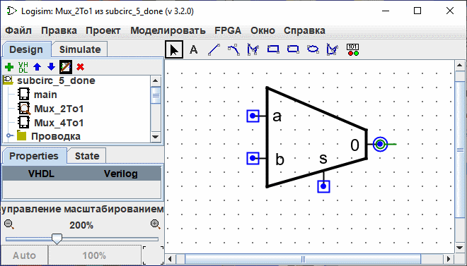
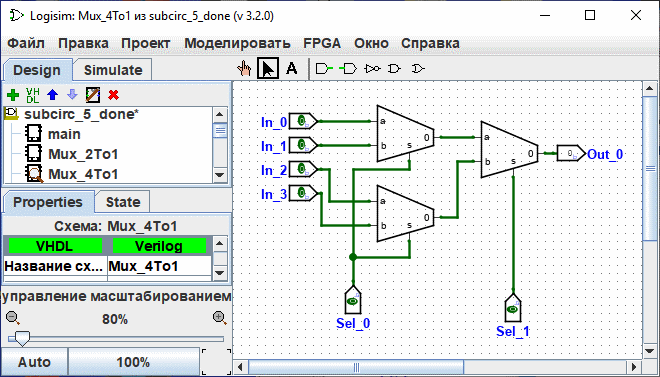
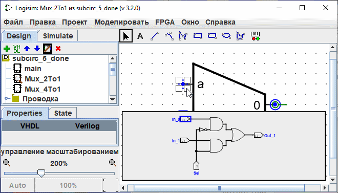

Изменение внешнего вида подсхемы
Внешний вид по умолчанию очень удобен, и фактически, Logisim существовал много лет без каких-либо других вариантов. Однако, если вы предпочитаете, чтобы подсхема была отрисована по-другому, вы можете выбрать Редактировать внешний вид схемы
из меню Проект, и Logisim переключится с привычного интерфейса редактирования чертежа на интерфейс для рисования внешнего вида схемы. Вы также можете нажать на иконку в крайнем правом ( ) углу панели инструментов Проводника.
Ниже мы редактируем внешний вид мультиплексора 2:1 так, чтобы он отрисовывался в виде обычной трапеции вместо прямоугольника.
) углу панели инструментов Проводника.
Ниже мы редактируем внешний вид мультиплексора 2:1 так, чтобы он отрисовывался в виде обычной трапеции вместо прямоугольника.

При показанном выше внешнем виде мультиплексора 2:1, чертёж мультиплексора 4:1 будет выглядеть следующим образом.

Редактор внешнего вида похож на традиционную программу для рисования, но есть несколько специальных символов для обозначения того, как рисунок работает при размещении его в чертеже схемы. Эти специальные символы не могут быть удалены.
-
Зеленый круг с линией, выходящей из него, который мы будем называть якорем(
 ). Существует ровно один якорь во внешнем виде каждой подсхемы. Каждый компонент в схеме имеет одну точку, определяющую его положение; пользователь видит это при создании нового компонента: щелчок мыши задаёт только одну точку, и компонент размещается относительно неё (обычно с главным выходом в этой точке). Якорь задаёт эту точку относительно всего рисунка при создании подсхемы.
). Существует ровно один якорь во внешнем виде каждой подсхемы. Каждый компонент в схеме имеет одну точку, определяющую его положение; пользователь видит это при создании нового компонента: щелчок мыши задаёт только одну точку, и компонент размещается относительно неё (обычно с главным выходом в этой точке). Якорь задаёт эту точку относительно всего рисунка при создании подсхемы.
Якорь также задаёт направление внешнего вида; оно указывается направлением линии анха, в котором она выходит из круга. При размещении подсхемы на чертеже, пользователь может изменить направление подсхемы; направление якоря указывает, в каком направлении ориентирован внешний вид. В нашем примере якорь направлен на восток, и каждый экземпляр подсхемы в мультиплексоре 4:1 тоже направлен на восток, поэтому они все отрисованы в том же направлении, что и внешний вид мультиплексора 2:1.
-
Голубые круги (
 ) и квадраты с точкой (
) и квадраты с точкой ( ) это подключения подсхемы. Портов в точности столько, сколько входных и выходных контактов в схеме. Входные соединения обозначены квадратами, а выходные соединения - кругами. Каждый символ указывает, как провод, подключенный к цепи, будет соответствовать входному или выходному выводу в схеме.
) это подключения подсхемы. Портов в точности столько, сколько входных и выходных контактов в схеме. Входные соединения обозначены квадратами, а выходные соединения - кругами. Каждый символ указывает, как провод, подключенный к цепи, будет соответствовать входному или выходному выводу в схеме.
Когда вы выбираете порт, Logisim указывает соответствующий контакт с помощью небольшой всплывающей в нижнем правом углу окна диаграммы, на которой соответствующий контакт(ы) показан синим. Этого не происходит, если выбраны все порты.

Мы можем изменить масштаб изображения с помощью Ctrl+колесика мыши или с помощью кнопок увеличительного стекла или ползунка в нижней левой части рабочей области. Отображается коэффициент масштабирования.
Панель инструментов содержит инструменты для добавления дополнительных фигур, Некоторые клавиши (Ctrl,Alt,Shift) влияют на то, как рисуются фигуры. Эти клавиши можно комбинировать друг с другом.
Ctrl: Выравнивает конечные точки на сетке.
Shift:Ориентирует линии под углом кратным 45° или делает фигуры симметричными (квадрат, округлый квадрат, круг).
Alt: Нарисуй цифры из центра.
Ниже приведена небольшая презентация каждого инструмента.

|
Инструмент для выбора: Выделять, перемещать, копировать и вставлять фигуры. |

|
инструмент для Текстовый Добавлять и редактировать текст. |

|
Инструмент для линии : Создать отрезок линии. |

|
инструмент для кривая Создает кривую Безье. Первый клик мыши и перетаскивание определяет начало строки, второй клик и перетаскивание заканчивают линию и определяют кривизну. Щелчок по линии показывает три контрольные точки. клик по линии показывает три контрольные точки. Shift и щелчок по центральной контрольной точке накладывает симметричную кривую. Alt и клик мыши по центральной точке проведет кривую через контрольную точку (под мышкой). |

|
Инструмент для Полилинии : Создать последовательность соединённых линий, вершины которых указываются последовательностью щелчков. Дважды щёлкните или нажмите клавишу Enter для завершения фигуры. |

|
Инструмент для прямоугольник : Создает прямоугольник или квадрат (Shift), с закругленным краем, перетаскивая из одного угла в другой. |

|
Инструмент для закругленных прямоугольников : Создает прямоугольник или квадрат (Shift) с закругленным краем, перетаскивая из одного угла в другой. |

|
инструмент для Овальный : Создает овал или окружность (Shift), путём перетаскивания от одного угла ограничивающей его рамки до противоположного. |

|
Инструмент для полигон : Создает полигон, каждый клик начинает новую сторону. двойной клик завершает последовательность. |

|
Динамические компоненты размещает динамический компонент.клик щелчок открывает окно для выбора компонентов в подсхемах. |
Далее: Отладка подсхем.